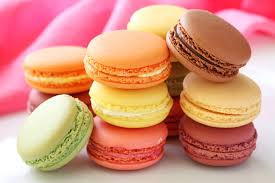

Macarons
Le macaron est un symbole de la pâtisserie française. Ils existent depuis des siècles et presque chaque région a son macaron.
Ingrédients
- 1 blanc d'oeuf
- 74 g de sucre glace
- 42 g d'amande en poudre
- 10 g de sucre en poudre
- 1 pointe de couteau de colorant alimentaire en poudre
Recette
- Commencer par mixer le sucre glace avec la poudre d'amande dans un mixeur. Passer au tamis (il faut que la poudre soit la plus fine possible, enlever les impuretés).
- Battre le blanc en neige et ajouter les 10 g de sucre, et le colorant, peu à peu en mixant jusqu'à ce que les blancs soient bien figés.
- Ajouter le sucre glace + les amandes en poudre au blanc en neige et mélanger délicatement avec une spatule afin de "casser" un peu les blancs.
- Mettre la pâte à macaron dans une poche à douille et faire des petits tas sur une plaque recouverte de papier sulfurisé puis laisser reposer les macarons pendant 15 min.
- Préchauffer le four à 140°C (thermostat 4-5) avec une plaque à l'intérieur pour qu'elle chauffe.
- Enfourner la plaque de macarons sur la plaque déjà chaude pour 10 min de cuisson chaleur tournante et porte entrouverte.
- Une fois cuits, sortir la plaque du four, et verser un peu d'eau sous la feuille de papier sulfurisé. Cela va dégager de la vapeur qui permet de bien décoller les macarons.
- Il ne reste plus qu'à les fourrer avec la ganache de votre choix ! Par exemple, chocolat blanc ou crème au beurre.